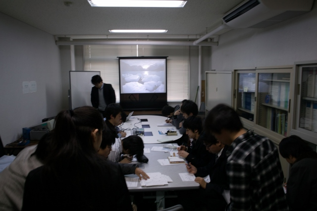
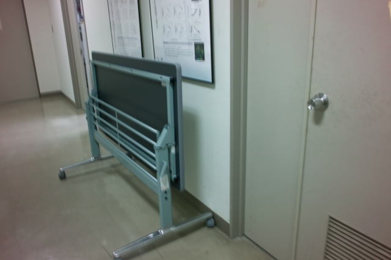
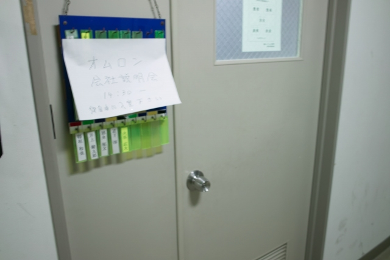
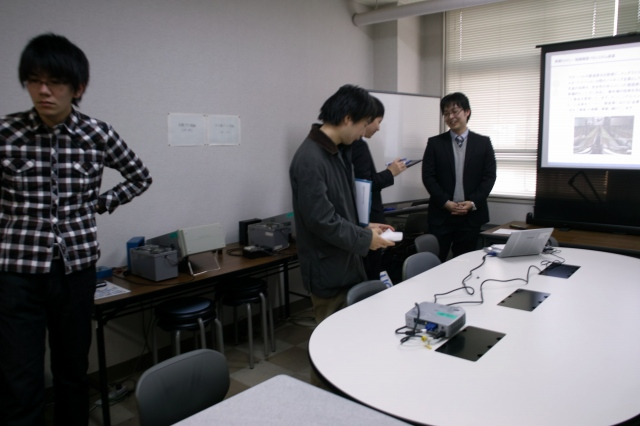
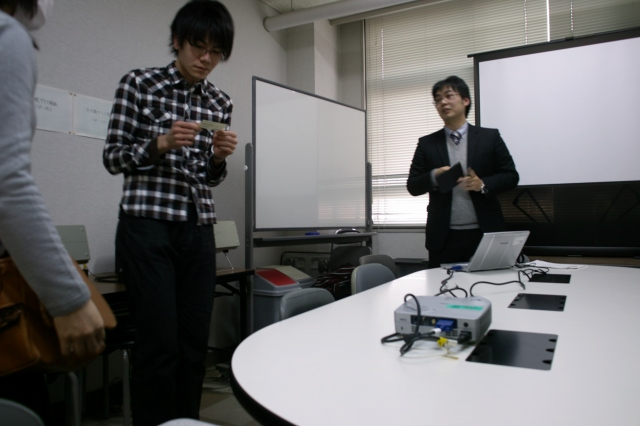

| ・ Recruiter (H24.02.02) | |||
オムロンから平成20年度修士課程修了の中岡先輩がリクルートに来てくださいました。他学科からも参加があり、30人ほどでFの部屋が満杯です。どうもエントリーした本学の学生に開催お知らせメールがあったようです。リクルートで来られる予定の方は参考にしてください。あと、午後開催がいいかもしれません。社会人の10時はお昼前ですが、学生の10時は早朝です。 |
|||
|

開催14時半直前で20人 |

あとから10人追加で、急遽机を廊下へ移動 | ||
|

手書き看板も設置 |
無事説明終わったようです | ||
|

熱心に対応する中岡先輩！ |

名刺を渡す中岡先輩、サラリーマンが板に付いてます | ||